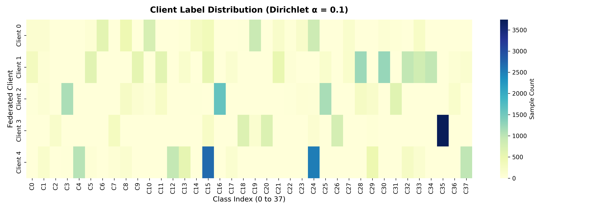
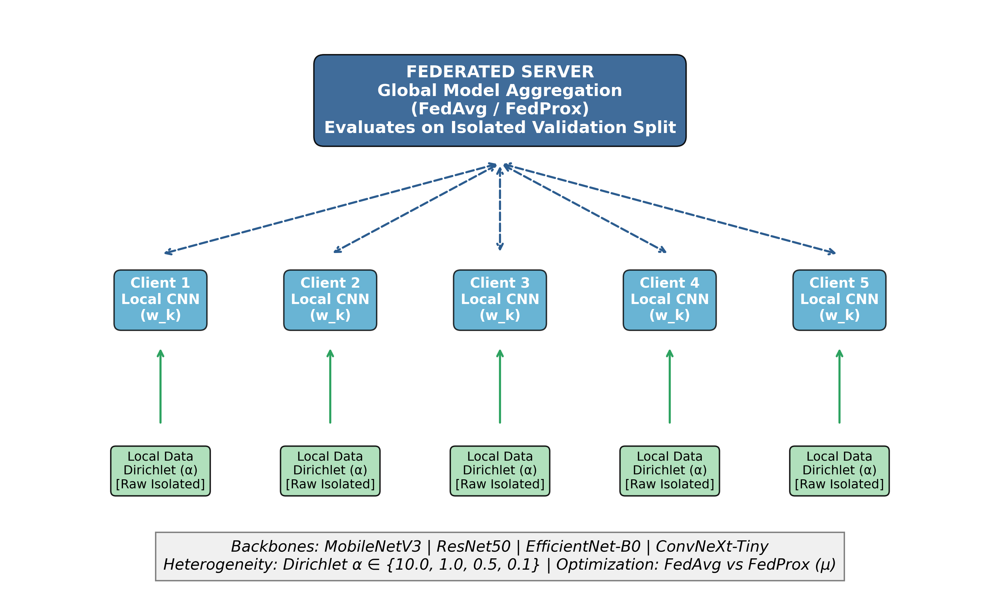
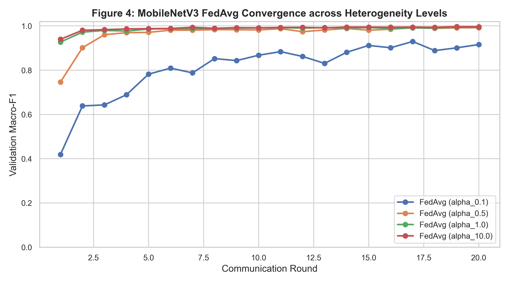
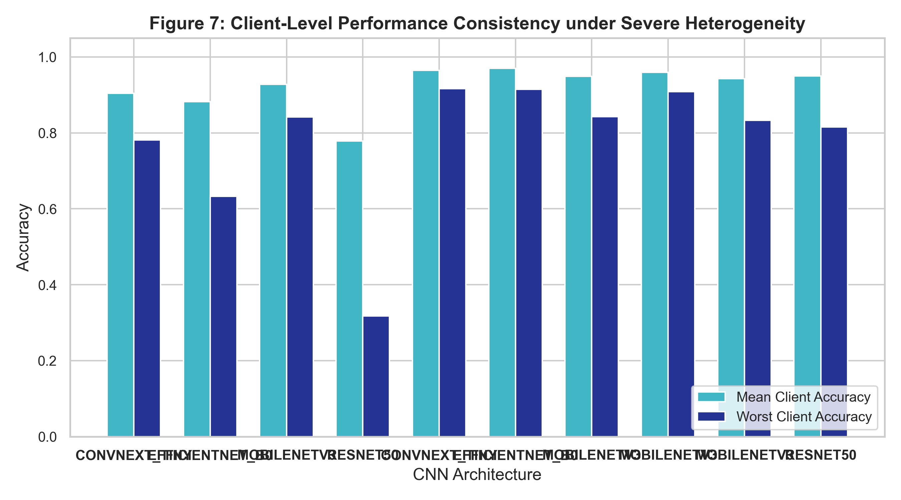
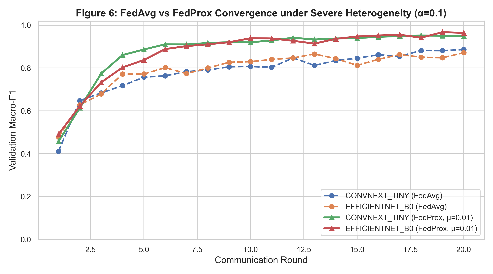
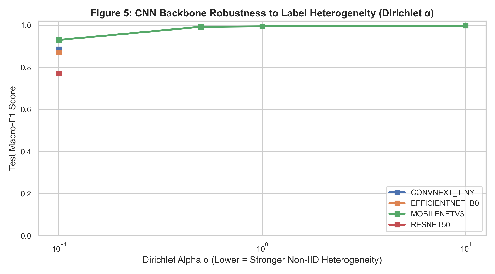
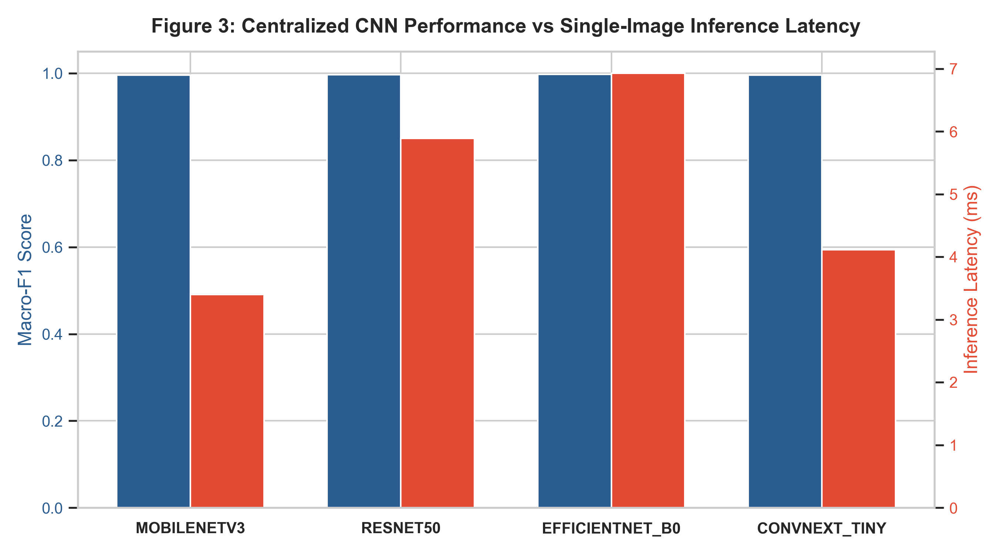
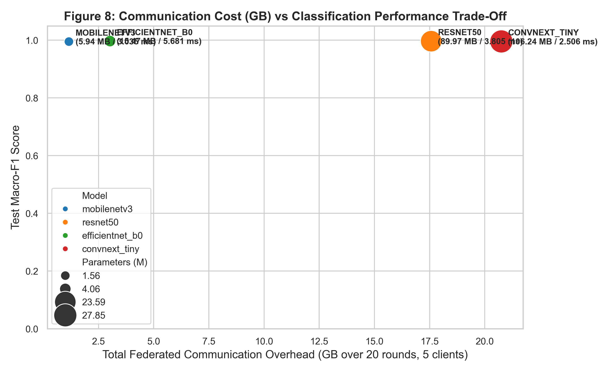
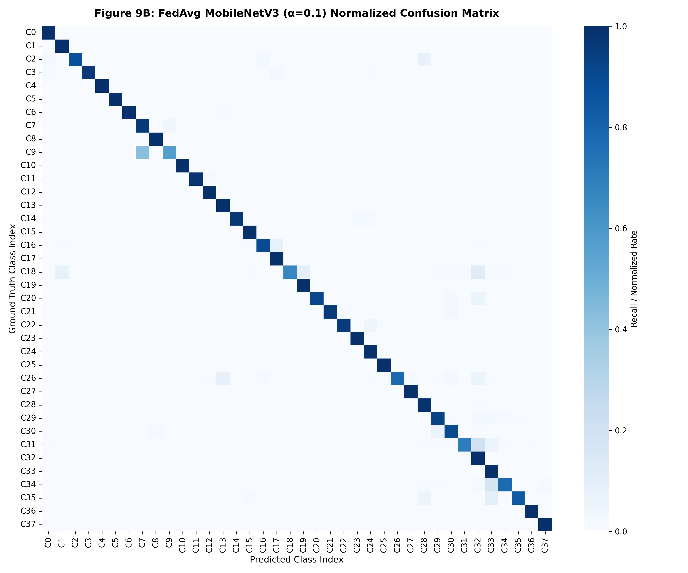
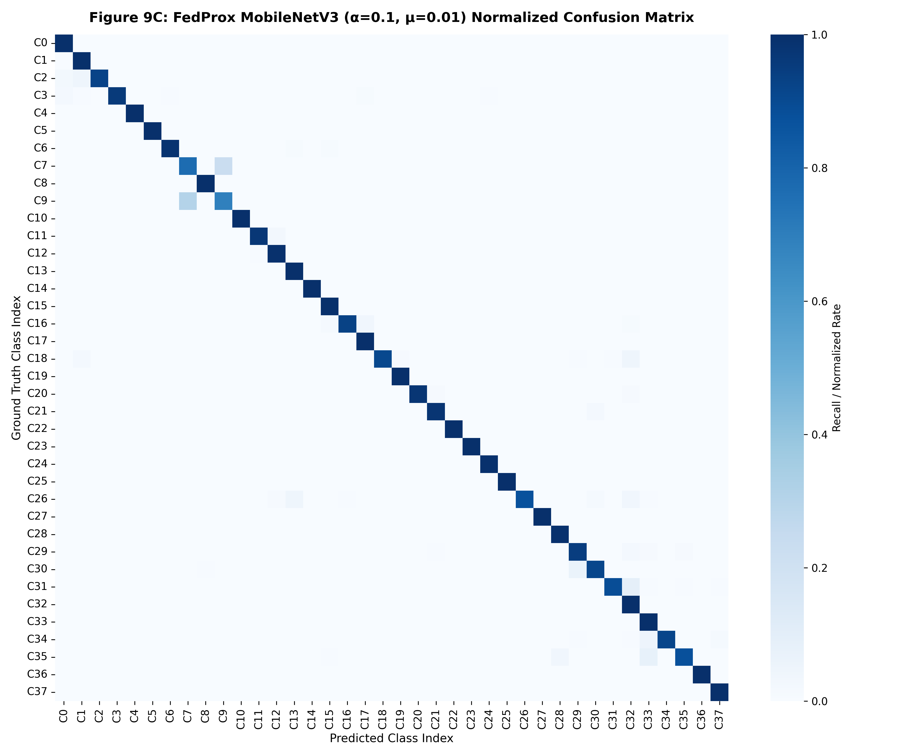

Project Overview & Scientific Scope
This research addresses collaborative diagnostic intelligence across agricultural enterprises under strict data sovereignty constraints. Precision crop diagnosis via deep learning typically requires centralized cloud repositories, exposing proprietary crop breeding data and demanding unsustainable rural bandwidth.
We systematically investigate whether plant disease classification can be performed collaboratively across decentralized farm nodes without exchanging raw imagery, with specific emphasis on statistical heterogeneity (Non-IID label distribution skew) where regional farms specialize in disjoint crop species.
Raw leaf imagery remains isolated on local edge dataloaders.
Controlled Dirichlet partitioning ($\alpha \in \{10.0, 1.0, 0.5, 0.1\}$).
4 CNN backbones across parameter, FLOP, and communication scales.
Problem Formulation: The Agricultural Edge Dilemma
- Requires transmitting high-resolution leaf images over rural 3G/4G cellular connections.
- Incurs massive bandwidth expenses and continuous network congestion.
- Breaches farm data sovereignty, revealing proprietary yield and pest vulnerability metrics.
- Decouples model training from raw data collection: images remain on local hardware.
- Clients exchange parameter updates $w_k$ with an aggregation server.
- Core Challenge: Extreme statistical heterogeneity across farms induces severe client drift.
PlantVillage Dataset & Partitioning Protocol
The benchmark comprises 54,305 high-resolution leaf images across 38 distinct crop-disease categories and 14 species (Tomato, Apple, Corn, Potato, Grape, Pepper, Peach, etc.). A strict three-way partitioned split was enforced with $\text{seed}=42$:
Client Cohort Formulation ($K = 5$ Simulated Farms)
Five decentralized clients ($K=5$) represent regional agricultural entities. Each client holds approximately $n_k \approx 7,602$ training images. Under non-IID conditions, class distributions vary sharply across clients to simulate regional crop monoculture.

Figure: Heatmap of sample assignments per class. Extreme column-wise sparsity demonstrates realistic monoculture conditions where clients hold 0 samples for the majority of categories.
Image Preprocessing & Augmentation Pipeline
Federated Learning Framework Architecture
Federated Learning orchestrates model training across distributed clients without data centralization. Optimization solves the global objective over $K$ client empirical loss distributions:

Five Stages of a Federated Communication Round ($t$)
Server distributes current global tensor $w^t$ to all clients.
Clients perform SGD for $E=1$ local epoch over private data.
Conflicting local class gradients pull weights in divergent directions.
FedProx penalizes $\|w - w^t\|_2^2$, restricting divergence.
Server computes weighted consensus $w^{t+1} = \sum \frac{n_k}{N} w_k^{t+1}$.
FedAvg: Federated Averaging Baseline Formulation
| Symbol | Formal Definition | Experimental Value in FedAgri |
|---|---|---|
| $w^{t+1}$ | Consensus parameter tensor for round $t+1$ | Aggregated PyTorch state_dict |
| $w_k^{t+1}$ | Local parameter weights optimized by client $k$ | Updated CNN weights from farm $k$ |
| $n_k$ | Cardinality of client $k$'s local dataset | $n_k \approx 7,602$ to $7,603$ samples |
| $N$ | Total training samples across all clients | $N = 38,013$ images |
| $K$ | Active client cohort size | $K = 5$ simulated farms |

The Client Drift Phenomenon under Label Skew
When client local objectives $F_k(w)$ differ strongly due to class imbalance ($\nabla F_k(w) \not\approx \nabla f(w)$), local gradient steps pull parameters toward isolated local minima.
Simple weighted coordinate averaging destroys critical specialized representations learned on missing categories. On ResNet50, this resulted in an unprecedented collapse: worst-client accuracy plummeted to 31.76% under severe Non-IID FedAvg ($\alpha = 0.1$).

FedProx: Proximal Regularization Formulation
The proximal term $\frac{\mu}{2} \| w - w^t \|_2^2$ serves as an elastic mathematical tether. As a client's local parameters $w$ drift away from global consensus $w^t$, the quadratic penalty increases, generating an inward restorative gradient $\mu(w - w^t)$ that confines client trajectory to a bounded neighborhood of the global consensus.

Proximal Regularization Dynamics: The Role of $\mu$
The proximal coefficient $\mu \ge 0$ modulates the trade-off between local empirical risk minimization and global stability:
Weak consensus anchor; partial client drift persists. MobileNetV3 test F1: 95.23%.
Optimal equilibrium between local specialization and global consensus. Top Macro-F1: 95.36% (MobileNet), 96.73% (EfficientNet).
Excessive tethering restricts clients from fitting local feature representations. Test F1 drops to 94.62%.
Dirichlet Concentration Parameter ($\alpha$) Formulation

Statistical Heterogeneity in Real Precision Agriculture
In biological data domains, identically distributed samples across all participating entities is an invalid assumption. Geographic microclimates, soil conditions, and economic specialization dictate crop varieties.
Consequently, local conditional label distributions $P_k(y)$ diverge sharply: $P_i(y) \neq P_j(y)$ for farms $i \neq j$. Evaluating federated architectures under extreme Dirichlet skew ($\alpha = 0.1$) is vital to ensuring operational reliability.
Master Experimental Hyperparameter Specification
| Hyperparameter | Experimental Setting | Functional Description |
|---|---|---|
| Communication Rounds ($T$) | 20 | Total global synchronization cycles |
| Local Epochs ($E$) | 1 | Local SGD passes through client data per round |
| Mini-Batch Size ($B$) | 32 | Samples per gradient update step |
| Optimizer | Adam | Adaptive Moment Estimation ($\beta_1=0.9, \beta_2=0.999$) |
| Learning Rate ($\eta$) | $10^{-4}$ (0.0001) | Base step size across all backbones |
| Dirichlet Concentration ($\alpha$) | 10.0, 1.0, 0.5, 0.1 | Degree of Non-IID label distribution skew |
| Proximal Coefficient ($\mu$) | 0.01 | Strength of consensus penalty in FedProx |
| Client Cohort ($K$) | 5 | Simulated decentralized farm nodes |
| Partition Seed | 42 | Enforces deterministic dataset partitioning across all models |
| Input Resolution | $224 \times 224 \times 3$ | Standardized spatial input tensor dimensions |
Optimization Step Size ($\eta = 0.0001$)
The learning rate $\eta = 10^{-4}$ governs the magnitude of parameter updates. A conservative learning rate prevents gradient explosion and catastrophic forgetting of ImageNet-pretrained representations during local fine-tuning.
Mini-Batch Stochastic Updates ($B = 32$)
Each client processes 32 leaf samples per mini-batch. For a client holding $n_k \approx 7,602$ images, this yields $\approx 237$ stochastic gradient update iterations per local epoch.
Local Computation Budget ($E = 1$)
Setting $E=1$ ensures that clients perform exactly one complete pass over their local training data before synchronizing with the central server, limiting local parameter divergence.
Federated Convergence Horizon ($T = 20$)
The global simulation runs for 20 communication rounds. Empirical validation confirms that Macro-F1 achieves asymptotic stability within 15–20 rounds across all backbones.
Adam Adaptive Moment Estimation
Adam maintains exponentially decaying averages of past gradients ($m_t$) and squared gradients ($v_t$), stabilizing non-convex optimization on sparse, imbalanced multi-class leaf datasets.
Deterministic Partition Control ($\text{Seed} = 42$)
Client index partitions were pre-computed with fixed seed 42 and serialized to JSON. All four CNN architectures evaluated identical client datasets, guaranteeing scientific fairness.
Architecture Selection & Centralized Baselines
Four distinct CNN architectures representing diverse design paradigms were evaluated:

Key Validation: Centrally, all 4 models surpass 99.5% Macro-F1 (Table 3), verifying that all backbones possess ample capacity to learn the 38 classes. Any divergence in FL is purely due to aggregation dynamics.
Why ResNet50 Suffered Extreme Collapse
ResNet50 contains 23.59 million parameters. Its high capacity allows clients with skewed data to rapidly overfit to local subsets. Weight vectors from different clients diverge into orthogonal regions of parameter space, causing severe feature cancellation during coordinate averaging.
Model Representation Capacity vs Robustness
Higher parameter count does not correlate with federated robustness. Constrained architectures (MobileNetV3: 1.56M parameters) limit local representation drift, exhibiting natural resilience under naive FedAvg (92.98% F1 vs ResNet50's 77.05%).
Hardware Profiling: Complexity, Latency & Network Transfer
| Architecture | Parameters | Model Size | Compute GFLOPs | Inference Latency | Total Comm (20 Rds) |
|---|---|---|---|---|---|
| MobileNetV3-Small | 1.56 M | 5.94 MB | 0.12 GFLOPs | 3.40 ms | 1.19 GB (-94.4%) |
| EfficientNet-B0 | 4.06 M | 15.47 MB | 0.82 GFLOPs | 6.93 ms | 3.09 GB |
| ResNet50 | 23.59 M | 89.97 MB | 8.26 GFLOPs | 5.89 ms | 17.99 GB |
| ConvNeXt-Tiny | 27.85 M | 106.24 MB | 8.98 GFLOPs | 4.12 ms | 21.25 GB |

Evaluation Metric Formulation: Macro-Averaged F1
PlantVillage contains severe natural class imbalance (from 5,357 Tomato Leaf Curl images down to 275 Potato Healthy images). Standard accuracy is heavily biased toward majority classes. We mandate Macro-F1:
Core Empirical Results: The +49.83% Worst-Client Rescue
| Backbone | Centralized F1 | FedAvg F1 ($\alpha=0.1$) | FedProx F1 ($\mu=0.01$) | FedAvg Worst Client | FedProx Worst Client | Worst-Client Gain |
|---|---|---|---|---|---|---|
| ResNet50 | 99.67% | 77.05% | 96.06% | 31.76% | 81.59% | +49.83% |
| EfficientNet-B0 | 99.71% | 87.16% | 96.73% | 63.26% | 91.44% | +28.18% |
| ConvNeXt-Tiny | 99.59% | 88.63% | 95.20% | 78.15% | 91.67% | +13.52% |
| MobileNetV3-Small | 99.53% | 92.98% | 95.36% | 84.16% | 90.85% | +6.69% |

Off-diagonal false positive bleed
Diagonal integrity restoredOperational Deployment Strategy (Dual Paradigm)
MobileNetV3-Small
Optimal for solar/battery IoT edge devices (Raspberry Pi 5, Jetson Orin Nano). Consumes only 1.19 GB cumulative bandwidth (94.4% reduction), executes inference in 3.4 ms, and guarantees 95.36% FedProx F1.
EfficientNet-B0
Optimal for regional agricultural servers with wired broadband. Delivers the highest overall federated accuracy (96.73% Macro-F1, 91.44% worst-client consistency) with a manageable 3.09 GB bandwidth footprint.
Complete Parameter Reference Directory
| Parameter | Configured Value | Academic Significance |
|---|---|---|
| Dataset | PlantVillage | Benchmark plant leaf pathology dataset |
| Total Samples | 54,305 | Total image pool across 38 classes and 14 species |
| Split Ratio | 70% / 15% / 15% | 38,013 train, 8,146 validation, 8,146 isolated test |
| Concentration ($\alpha$) | 10.0, 1.0, 0.5, 0.1 | Dirichlet statistical heterogeneity concentration parameter |
| Proximal ($\mu$) | 0.01 | Optimal consensus constraint coefficient in FedProx |
| Rounds ($T$) | 20 | Total global server-client aggregation epochs |
| Local Epochs ($E$) | 1 | Local client dataset iterations prior to synchronization |
| Batch Size ($B$) | 32 | Mini-batch stochastic gradient step cardinality |
| Optimizer & $\eta$ | Adam ($10^{-4}$) | Adaptive moment optimizer with base learning rate 0.0001 |
| Control Seed | 42 | Fixed seed enforcing deterministic client partition reuse |
| Primary Metric | Macro-F1 | Equal-weighted multi-class diagnostic evaluation |
The Five Foundational System Parameters
Controls degree of Dirichlet statistical heterogeneity.
Elastic tether preventing client drift from global weights.
Gradient step size during local parameter updates.
Local computation budget between network communications.
Total global federated synchronization cycles.
Executive Technical Summary
This research delivers a rigorous empirical investigation of Federated Learning for plant disease diagnosis on 54,305 PlantVillage images across 38 categories under controlled statistical heterogeneity.
Under extreme Dirichlet label skew ($\alpha = 0.1$), standard FedAvg causes catastrophic client drift in deep architectures, causing ResNet50 worst-client accuracy to collapse to 31.76%. FedProx proximal regularization ($\mu = 0.01$) eliminates divergence, restoring worst-client accuracy to 81.59% (+49.83% gain) and lifting global Macro-F1 to 96.06%. EfficientNet-B0 achieves top overall F1 at 96.73%.
Hardware profiling demonstrates that MobileNetV3-Small provides the premier edge solution—achieving 95.36% FedProx F1 while consuming only 1.19 GB cumulative communication (94.4% less network overhead than ConvNeXt-Tiny) with an inference latency of 3.40 ms.